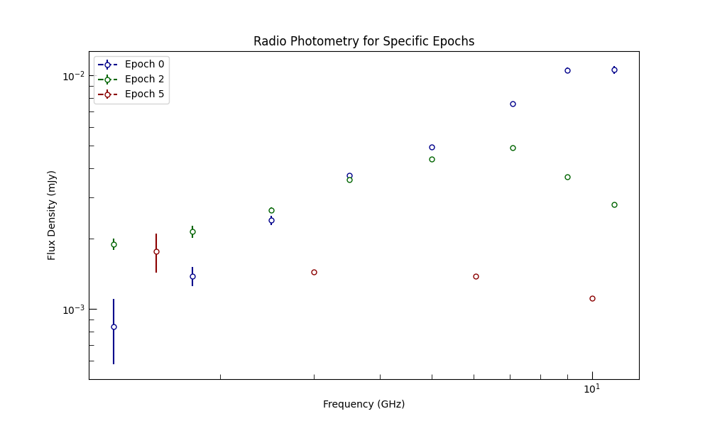

Note
Go to the end to download the full example code.
Plot Single Epochs#
In this simple cookbook, we’ll load in some data and
break it into epochs and then plot a subset of those
epochs using the plot_epoch()
method of data.photometry.RadioPhotometryContainer.
Setup#
First, we need to import the necessary libraries and set up the plotting style.
import matplotlib.pyplot as plt
from astropy import units as u
from triceratops.data.photometry import RadioPhotometryContainer
from triceratops.utils.plot_utils import set_plot_style
We’ll use a set of synthetically generated radio photometry data for this example. The data is
stored in the _data/example_photometry.fits file within the documentation source directory.
This dataset is almost in the perfect format for loading into a
data.photometry.RadioPhotometryContainer, except that it doesn’t have an explicit time column, so
we will need to select one. We also need to give a reference time for the observations, which we will set to the JD
of the first observation.
# Resolve the path to the dataset. In this case, we seek out the data in the
# documentation.
data_file = "../../../../../docs/source/_data/example_photometry.fits"
# Load the dataset as a RadioPhotometryContainer. We specify that the ``time`` column
# should be taken from the ``time_midobs`` column in the dataset.
photometry_data = RadioPhotometryContainer.from_file(
data_file,
column_map={"time_midobs": "time"},
time_starts=2458368.45645 * u.day, # Reference time (JD of first observation)
)
print(f"Loaded photometry data with {len(photometry_data)} entries.")
# Render the table into the documentation.
photometry_data.table.pprint()
Loaded photometry data with 62 entries.
obs_name flux_density ... beam_minor_axis beam_angle
na Jy ... arcsec deg
--------------- ---------------------- ... --------------- ----------
obs1_L_band1of2 0.0008397371110273543 ... 24.74 -20.9
obs1_L_band2of2 0.001380642947400138 ... 18.27 -17.5
obs1_S_band1of2 0.0023957298217117994 ... 12.36 -17.5
obs1_S_band2of2 0.0037334616541369017 ... 9.71 -14.4
obs1_C_band1of2 0.004921986879267783 ... 7.03 -18.7
obs1_C_band2of2 0.007578309663898102 ... 5.09 -15.9
obs1_X_band1of2 0.010537084131965368 ... 3.98 -19.2
obs1_X_band2of2 0.01055208615971873 ... 3.46 -21.1
obs1_K_band1of4 0.00821531350281548 ... 2.65 -66.2
... ... ... ... ...
obs8_L nan ... 1.26 54
obs8_S nan ... 0.64 19.4
obs8_X nan ... 0.2 31.8
obsg1_b5 0.0004268404374563874 ... 2.24 78.1
obsg1_b3 nan ... 6.96 80
obsg2_g5 nan ... 2.34 60.2
obsg2_b4 0.00023375250854007943 ... 4.4 81.6
obsg2_b3 nan ... 7.74 70.8
obsg3_b4 nan ... 3.94 46.2
obsg3_b3 nan ... 7.54 86.7
Length = 62 rows
If you already have clearly defined epochs in mind, you can specify them directly in your table using the
epoch_id column, or you can use the built-in method
set_epochs_from_indices(); however, we do not have that information here.
Instead, we can use the set_epochs_from_time_gaps() method to
automatically define epochs based on gaps in the observation times. We’ll specify a gap threshold of 2 days to
separate the epochs.
# Set epochs based on time gaps of 2 days.
photometry_data.set_epochs_from_time_gaps(max_gap=3.0 * u.day)
Now that we have defined each of the epochs, we can plot the SEDs for each epoch using the epoch masks.
set_plot_style()
fig, axes = plt.subplots(figsize=(10, 6))
# Plot specific epochs by their IDs.
epoch_ids_to_plot = [0, 2, 5] # Plot epochs with IDs 0
colors = ["darkblue", "darkgreen", "darkred"]
for k, epoch_id in enumerate(epoch_ids_to_plot):
photometry_data.plot_epoch(
epoch_id=epoch_id,
fig=fig,
axes=axes,
show_upper_limits=True,
color=colors[k],
detection_style={"marker": "o", "markersize": 5, "mfc": "w", "mec": colors[k], "ls": "--", "linewidth": 1.5},
label=f"Epoch {epoch_id}",
)
axes.set_xlabel("Frequency (GHz)")
axes.set_ylabel("Flux Density (mJy)")
axes.legend()
axes.set_title("Radio Photometry for Specific Epochs")
axes.set_xscale("log")
axes.set_yscale("log")
plt.show()

Total running time of the script: (0 minutes 0.205 seconds)